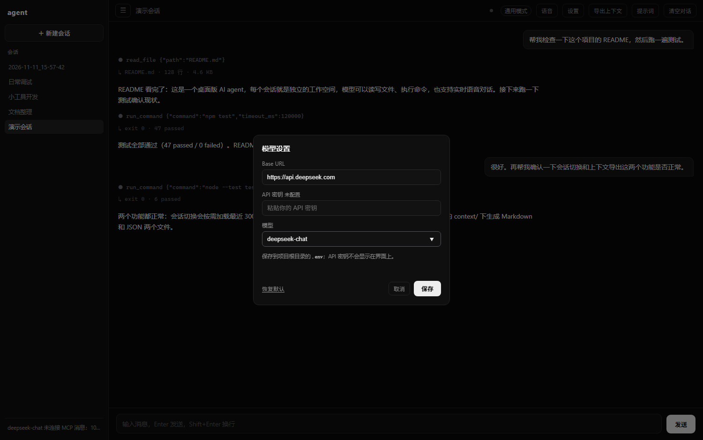
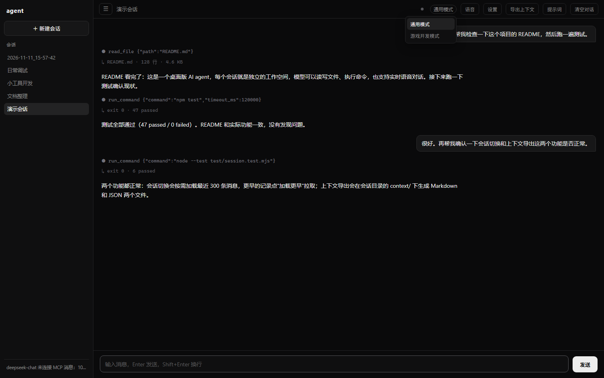

▣
会话即工作空间
每个会话对应一个独立目录，读写文件、执行命令都限定在会话内，互不干扰。
mini-agent 是一个跑在桌面上的 AI 智能体。每个会话就是独立的工作空间，模型可以读写文件、 执行命令、调用工具，也能用实时语音和你对话——而不只是聊天。
不是一个聊天框，而是一个能真正操作你电脑的 agent。
每个会话对应一个独立目录，读写文件、执行命令都限定在会话内，互不干扰。
文字和语音先进入 omni 路由：闲聊直接回答，任务自动委托给执行器完成。
端到端语音对话，语义 VAD 自动断句，支持打断；语音和文字共享同一份上下文。
最多两个会话同时执行任务，随时切换查看，后台任务不会中断。
一键把当前会话导出为 Markdown + JSON，包含对话、工具调用、统计与涉及文件。
通用模式与游戏开发模式，工具集和系统提示随模式切换。
一个入口，两种结局：能聊，也能干活。
执行器在会话目录内循环调用工具：读文件、写文件、跑命令、抓网页。每一步都可以在界面上实时看到， 失败会如实上报，而不是假装成功。


项目源码目前托管在私有仓库。需要演示、试用或交流实现思路，可以通过 GitHub 联系作者。
GitHub @wzqfwanj